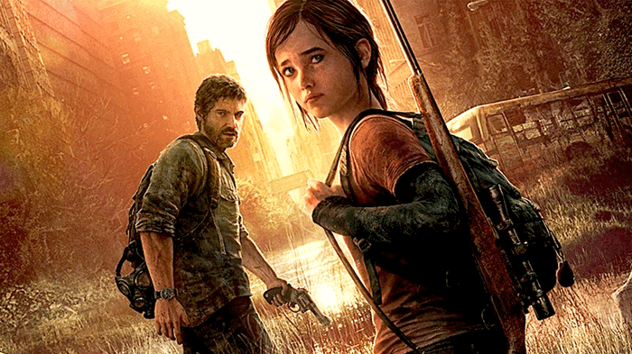
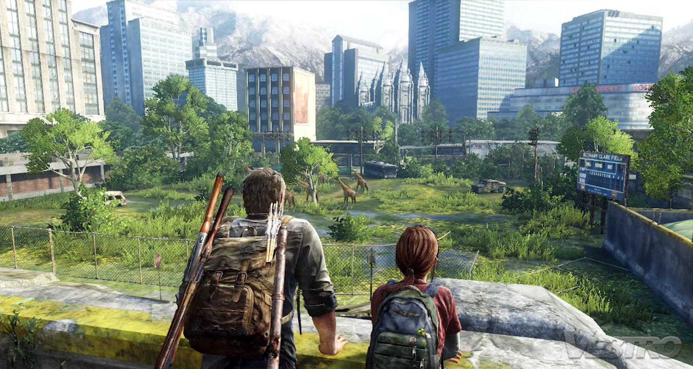

The Last of Us é jogado a partir de uma perspectiva em terceira pessoa, com os jogadores usando armas de fogo, armas improvisadas e furtividade a fim de defenderem-se de humanos hostis e criaturas canibalísticas infectadas por uma mutação do fungo Cordyceps. Um "Modo de Escuta" permite a localização de inimigos por meio de uma escuta e percepção espacial aprimoradas. Armas podem ser melhoradas usando itens recolhidos do ambiente. Há um modo multijogador online em que até oito jogadores podem entrar em diferentes modos de partidas cooperativas ou competitivas. imagem ellie e joel.O jogo se passa vinte anos depois do surto de infecção causada por uma mutação do fungo Cordyceps que destruiu boa parte da civilização humana. A história um jogador segue Joel, um homem encarregado de escoltar uma garota chamada Ellie através de um Estados Unidos pós-apocalíptico. Os jogadores atravessam vários locais em sua jornada, usando de combates e furtividade a fim de defenderem-se contra humanos hostis e criaturas canibalísticas conhecidas como Infectados.A história The Last of Us 2 The Last of Us Part II se passa cinco anos após os acontecimentos do primeiro jogo. Joel e Ellie estão em um acampamento em Jackson, onde tentam levar uma vida normal. Nesse tempo, ela se envolve com Dina em um relacionamento que vai amadurecendo ao longo do jogo. Ao mesmo tempo, é com Joel que as coisas não vão nada bem… Mas tudo muda drasticamente quando ele, ao lado de seu irmão Tommy, some durante uma patrulha. Quando Ellie finalmente o encontra é tarde demais e, sem nenhuma chance de evitar o pior, o acontecimento desencadeia sua busca por vingança e respostas, mas também uma intensa crise de estresse pós-traumático. Mais curiosidades

Atenção! Esta lista contém SPOILERS dos jogos The Last of Us e The Last of Us Part II. Se você não quer estragar nenhuma surpresa, guarde este link e volte aqui depois de jogar.
Infectado são humanos que foram infectados e posteriormente mutados em horríveis novas formas pela Infecção do cérebro de Cordyceps. As criaturas resultantes são altamente agressivas e atacam qualquer humano não infectado à vista. Os infectados são um dos principais tipos de inimigos em The Last of Us, Left Behind e The Last of Us Part II, o outro sendo os inimigos humanos.
The Last of Us é um jogo eletrônico pós-apocalíptico de ação-aventura e sobrevivência apresentado a partir de uma perspectiva em terceira pessoa. O jogador atravessa uma série de ambientes arruinados, passando por locais variados como cidades, florestas, edifícios e esgotos a fim de avançar pela história. Armas de fogo, armas improvisadas e furtividade são usadas para derrotar humanos hostis e criaturas canibalísticas infectadas por uma mutação do fungo Cordyceps. O jogador controla durante a maior parte da história o personagem de Joel, um homem encarregado de escoltar uma garota chamada Ellie através dos Estados Unidos; ela e outros companheiros ocasionais encontrados no decorrer da narrativa são controlados pela inteligência artificial. Ellie torna-se temporariamente a personagem jogável durante um único segmento da história. O jogador usa no combate tanto armas de longo alcance (como rifles, espingardas e arcos) quanto de curto alcance (como pistolas, revólveres e espingardas curtas); também é possível utilizar armas brancas (como canos e tacos de beisebol). Garrafas e tijolos podem ser jogados para distrair, tontear ou atacar inimigos. The Last of Us possui um sistema de criação que permite que o jogador aprimore armas em mesas de trabalho usando itens coletados nos ambientes. Equipamentos como kits médicos e coquetéis Molotov podem ser encontrados ou produzidos com os materiais recolhidos. Habilidades físicas, como o tamanho do medidor de saúde e velocidade de criação, podem ser melhoradas ao coletar pílulas e plantas medicinais. O medidor de saúde do jogador pode ser recarregado por meio de kits médicos caso o personagem tome algum dano. Mais curiosidades

4 de junho de 2012 GameSpot's Best of E3 2012 Editors' Choice Awards Melhor Jogo The Last of Us Venceu [6] 9 de junho de 2012 The Daily Telegraph's E3 2012: Best in show Melhor Jogo The Last of Us Venceu [7] 11 de junho de 2012 The Electric Playground's Best of E3 Winners Melhor Jogo The Last of Us Venceu [8] Electronic Gaming Monthly Presents: The Best of E3 2012 Jogo do Show The Last of Us Venceu [9] Melhor Jogo de PS3 The Last of Us Venceu 12 de junho de 2012 Destructoid's Best of E3 2012 Jogo do Show The Last of Us Venceu [10] Melhor Jogo de PlayStation 3 The Last of Us Vice Melhor Ação/Aventura The Last of Us Indicado PlayStation Universe's E3 2012 Awards Melhor Jogo The Last of Us Venceu [32] Jogo Mais Antecipado The Last of Us Venceu [3] Melhor Trailer The Last of Us Trailer da E3 2012 Vice [33] 24 de junho de 2012 Cheat Code Central's The Best of E3 2012 Melhor Jogo Geral The Last of Us Venceu [34] Jogo Mais Antecipado The Last of Us Venceu [4] 26 de junho de 2012 Game Critics Awards: Best of E3 2012 Melhor do Show The Last of Us Venceu [35] Melhor Jogo Original The Last of Us Venceu Melhor Jogo de Console The Last of Us Venceu Melhor Jogo de Ação/Aventura The Last of Us Venceu Louvor Especial por Som The Last of Us Venceu 7 de dezembro de 2012 Spike Video Game Awards 2012 Jogo Mais Antecipado The Last of Us Indicado [5] 9 de dezembro de 2012 Inside Gaming Awards Melhor Trailer The Last of Us Trailer Gamescom 2012 Venceu [36] 15 de outubro de 2013 Games Games of the Year and Other Awards 2014 Melhor Novo Jogo de Ação The Last of Us Venceu [37] 26 de outubro de 2013 Golden Joystick Awards 2013 Melhor Novato The Last of Us Venceu [38] Melhor Narrativa The Last of Us Venceu Estúdio do Ano Naughty Dog Venceu Jogo do Ano The Last of Us Indicado [39] Melhor Desenho Visual The Last of Us Indicado Melhor Momento "Perda de Joel" Indicado 14 de novembro de 2013 International Business Times' Five Best Video Games of 2013 Melhor Jogo The Last of Us Venceu [40] 22 de novembro de 2013 contactmusic.com's Top 10 Games of 2013 Melhor Jogo The Last of Us Venceu [41] 3 de dezembro de 2013 Good Game Awards 2013 Melhor Jogo The Last of Us Venceu [25] Momento Mais Memorável "Girafas" Indicado [42] Time's Top 10 Video Games of 2013 Melhor Jogo The Last of Us Sexto [43] 4 de dezembro de 2013 Inside Gaming Awards Melhor Som The Last of Us Venceu [44] Melhor Dublagem The Last of Us Venceu Jogo do Ano The Last of Us Indicado [45] Mais Imersivo The Last of Us Indicado Melhor História The Last of Us Indicado Escolha dos Jogadores The Last of Us Indicado 6 de dezembro de 2013 Cheat Code Central's Cody Awards Jogo do Ano The Last of Us Venceu [46] Estúdio do Ano Naughty Dog Venceu [47] Melhor Personagem Masculino Joel Venceu [48] Melhor Personagem Feminina Ellie Venceu [49] Melhor Jogo de PlayStation The Last of Us Venceu [50] Melhor Som The Last of Us Vice [51] Melhores Gráficos The Last of Us Indicado [52] Melhor Jogo de Ação/Aventura The Last of Us Indicado [53] 7 de dezembro de 2013 Spike VGX 2013 Estúdio do Ano Naughty Dog Venceu [23] Melhor Jogo de PlayStation The Last of Us Venceu Melhor Dublador Troy Baker Venceu Melhor Dubladora Ashley Johnson Venceu Jogo do Ano The Last of Us Indicado Melhor Jogo de Ação-Aventura The Last of Us Indicado Melhor Trilha Sonora The Last of Us Indicado 9 de dezembro de 2013 Slant Magazine's 25 Best Video Games of 2013 Melhor Jogo Eletrônico The Last of Us Quinto [54] 12 de dezembro de 2013 Daily Mirror's Top games of 2013 Melhor Jogo The Last of Us Venceu [29] 13 de dezembro de 2013 GameSpot's Game of the Year 2013 Awards Jogo de PlayStation 3 do Ano The Last of Us Venceu [55] Jogo do Ano The Last of Us Indicado [56] 17 de dezembro de 2013 Canada.com's Top video games of 2013 Jogo do Ano The Last of Us Venceu [57] Forbes's Best Video Game Shooters of 2013 Melhor Jogo Eletrônico de Tiro The Last of Us Venceu [58] Game Revolution's Best of 2013 Awards Melhor Desenvolvedora Naughty Dog Venceu [59] 19 de dezembro de 2013 Melhor Exclusivo de PlayStation 3 The Last of Us Venceu [60] CNET's 15 best video games of 2013 Melhor Jogo Eletrônico The Last of Us Vice [61] The New Zealand Herald 2013 in review Melhor Jogo The Last of Us Venceu [62] 20 de dezembro de 2013 Game Revolution's Best of 2013 Awards Jogo do Ano The Last of Us Venceu [63] Digital Spy's best games of 2013 Melhor Jogo The Last of Us Quarto [64] Entertainment Weekly's Top 10 Videogames of 2013 Melhor Jogo The Last of Us Vice [65] The Guardian's Top 25 video games of 2013 Melhor Jogo The Last of Us Vice [66] Wired's Top 10 Best Videogames of 2013 Melhor Jogo The Last of Us Quinto [67] 21 de dezembro de 2013 IGN Australia's Top 12 Games of 2013 Melhor Jogo The Last of Us Venceu [68] Hardcore Gamer's Game of the Year Awards 2013 Melhor Jogo de PlayStation 3 The Last of Us Venceu [69] Melhor Jogo de Ação The Last of Us Venceu [70] Melhor Desenvolvedora Naughty Dog Venceu [71] Melhor Personagem Nova Ellie Venceu [72] Melhor Propriedade Intelectual Nova The Last of Us Venceu [73] Melhor Dublagem The Last of Us Venceu [74] Melhor Roteiro The Last of Us Venceu [75] O Troféu Troy Baker Troy Baker Venceu [76] Melhor Trilha Sonora Original The Last of Us Indicado [77] Melhor Desenho Sonoro The Last of Us Indicado [78] Melhor História The Last of Us Indicado [79] 22 de dezembro de 2013 Jogo do Ano The Last of Us Venceu [30] 23 de dezembro de 2013 The A.V. Club's Readers' Poll Melhor Jogo The Last of Us Venceu [80] Giant Bomb's 2013 Game of the Year Awards Jogo Mais Bonito The Last of Us Venceu [81] 24 de dezembro de 2013 Destructoid's Best of 2013 Jogo do Ano The Last of Us Venceu [82] Escolha da Comunidade The Last of Us Venceu [83] Melhor Exclusivo de Console The Last of Us Venceu [84] Melhores Visuais The Last of Us Venceu [85] Melhor História The Last of Us Indicado [86] Melhor Jogo de Ação The Last of Us Indicado [87] Melhor Personagem Joel Indicado [88] Ellie Indicado Giant Bomb's 2013 Game of the Year Awards Melhor História The Last of Us Venceu [89] 25 de dezembro de 2013 Melhor Estreante The Last of Us Venceu [90] 26 de dezembro de 2013 Melhor Momento ou Sequência "O Final" Indicado [91] Ars Technica 20 best video games of 2013 Melhor Jogo The Last of Us Vice [92] Edge Awards 2013 Melhor Jogo The Last of Us Vice [93] GLAAD Media Awards Novo Personagem LGBT Mais Intrigante Bill Quinto Erro de citação: Etiqueta inválida; nomes inválidos, por exemplo, demasiados nomes 27 de dezembro de 2013 Giant Bomb's 2013 Game of the Year Awards Melhor Jogo The Last of Us Venceu [94] 28 de dezembro de 2013 Edge Awards 2013 Melhor Desenho de Áudio The Last of Us Venceu [95] 29 de dezembro de 2013 EGM's Best of 2013 Melhor Jogo The Last of Us Quarto [96] 30 de dezembro de 2013 Edge Awards 2013 Estúdio do Ano Naughty Dog Vice [97] EGM's Best of 2013: Reader's Choice Melhor Jogo The Last of Us Venceu [98] Kotaku's Game of the Year 2013 Jogo do Ano The Last of Us Venceu [26] Jogo do Ano dos Leitores The Last of Us Venceu [99] 31 de dezembro de 2013 The Daily Telegraph Video Game Awards 2013 Jogo do Ano The Last of Us Venceu [24] Melhor Roteiro Neil Druckmann Venceu Melhor Intérprete Ashley Johnson Venceu Troy Baker Indicado Melhor Diretor Bruce Straley e Neil Druckmann Indicado Melhor Direção de Arte Nate Wells Indicado Melhor Desenho de Som Phil Kovats Indicado Melhor Trilha Sonora Original Gustavo Santaolalla Indicado Melhor Desenvolvedora Naughty Dog Indicado Realização Técnica The Last of Us Indicado The Escapist Awards 2013 Melhor Jogo de Ação-Aventura The Last of Us Venceu [100] VideoGamer.com Game of the Year 2013 Jogo do Ano The Last of Us Venceu [27] 2 de janeiro de 2014 GameSpot People's Choice Jogo do Ano The Last of Us Venceu [101] 3 de janeiro de 2014 Joystiq Top of 2013 Melhor Jogo The Last of Us Venceu [102] 7 de janeiro de 2014 GameTrailers Game of the Year Awards 2014 Jogo do Ano The Last of Us Venceu [103] Melhor História The Last of Us Venceu Melhor Tiro em Terceira Pessoa The Last of Us Venceu Melhor Exclusivo de PlayStation The Last of Us Venceu Melhores Gráficos The Last of Us Indicado Melhor Trilha Sonora The Last of Us Indicado